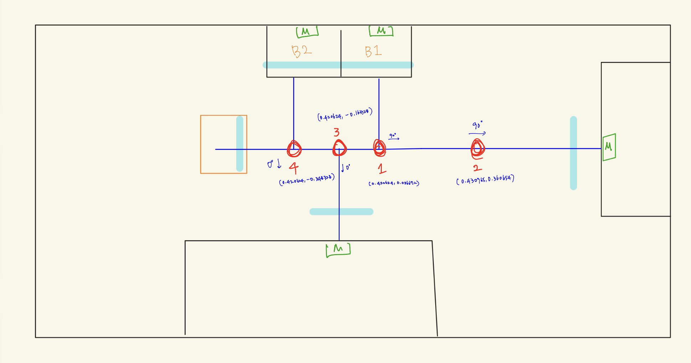

NAVIGATION · WAYPOINTS
버거 1 웨이포인트
Confluence 도면과 실제 map 좌표·도착 방향을 함께 확인합니다.
01 · CONFLUENCE DRAWING
원본 크게 보기 ↗웨이포인트 도면

map 좌표 위치 보기 · +X → / +Y ↑
위 그래프는 좌표 간 상대 위치만 표시합니다. 벽·장애물·도킹 지점을 표현하는 현장 지도는 아닙니다.
03 · SIMULATION ROUTES
버거 1 · 시뮬레이션 기준목적지별 경유점
1~4번은 최종 도착지가 아닌 경유·회전 지점입니다. 최종 목적지는 초기위치·자재창고·제작공정·대기장소이며, 도킹과 후방 IR 정지는 버거의 로컬 동작입니다. 이 경유 순서는 도면과 시뮬레이션에서 추정했으므로 실제 지도에서 확인해야 합니다.
방향 확인 도면에는 map 좌표축 방향이 표시되어 있지 않습니다. 손그림 화살표와 yaw를 실제 지도 좌표계로 대조하고, 역방향 경로에서는 진행 방향에 맞는 yaw를 사용하세요.
좌표 기준 위치는 m 단위, yaw는 도 단위입니다. 0°는 +X, 90°는 +Y 방향입니다. 전진/후진 여부는 각 웨이포인트의 mode를 확인하세요.
현재 웹 시뮬레이션은 이 번호를 세로 배치도의 개념 위치에 대응해 표시합니다. 실제 map 좌표계의 경로·최종 도킹과는 별개입니다. 이 화면에서 좌표를 열어도 Host나 버거에 이동 명령을 보내지 않습니다. 버거 2는 별도 좌표가 필요합니다.
기준 문서: Confluence · 운반로봇 웨이포인트 정보 ↗